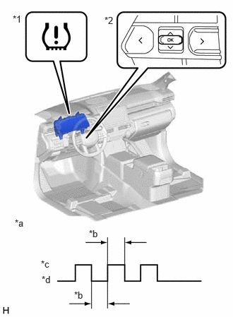

| Last Modified: 10-07-2025 | 6.11:8.1.0 | Doc ID: RM100000002HATI |
| Model Year Start: 2024 | Model: Tacoma | Prod Date Range: [12/2023 - ] |
| Title: TIRE PRESSURE MONITORING: TIRE PRESSURE WARNING RECEIVER (for Double Cab): INITIALIZATION; 2024 - 2026 MY Tacoma Tacoma HV [12/2023 - ] | ||
INITIALIZATION
NOTICE:
- Initialization can be confirmed through the tire pressure warning light.
- If the ignition switch is turned off during initialization, the tire pressure warning ECU and receiver memorizes that initialization was being performed. Therefore, it is not necessary to perform the initialization procedure again after turning the ignition switch to ON. (Only when "Setting by Current Pressure" is selected.)
- The order in which the data is received is random. (Only when "Setting by Current Pressure" is selected.)
- If the signals from all the tire pressure warning valve and transmitters are received, initialization is completed. (Only when "Setting by Current Pressure" is selected.)
- When "Complete" is displayed for the value of
Data List item "Initialization Not Completed", the
initialization is completed.
Click here
![2024 - 2026 MY Tacoma Tacoma HV [12/2023 - ]; TIRE PRESSURE MONITORING: TIRE PRESSURE WARNING SYSTEM: DATA LIST / ACTIVE TEST](../../../../stylegraphics/info.gif)
- Initialization is normally completed within a few minutes. (Only when "Setting by Current Pressure" is selected.)
- If initialization has not been completed successfully, Vehicle Control History (RoB) X20FE is stored after a vehicle speed of 40 km/h (25 mph) or more continues for 20 minutes or more. (Only when "Setting by Current Pressure" is selected.)
- Even if initialization is performed, the existing tire positions will not be cleared. Perform the tire position identification procedure as necessary.
BEFORE INITIALIZATION
(a) Set the tire pressure to the specified value. (Only when "Setting by Current Pressure" is selected.)
NOTICE:
Refer to the link as the procedure for adjusting the tire pressures differs depending on the temperature of the tires.
Click here
INITIALIZATION PROCEDURE
HINT:
The tire pressure warning system illuminates the tire pressure warning light to warn the driver when any of the following conditions are met:
- The tire pressure drops to approximately 75% or less of the tire pressure set when system initialization was performed using the steering pad switch assembly.
- The tire pressure drastically decreases
(approximately 20 kPa (0.2 kgf/cm2, 2.9
psi) or more within several minutes) to approximately
75% or less of the tire pressure* when the tires are
warmed.
*: If initialization is performed and the vehicle is driven for a certain period of time, the tire pressure set during system initialization is adjusted and set to the tire pressure when the tires are warmed from the driving conditions.
NOTICE:
If the tire pressure is decreased approximately 20 kPa (0.2 kgf/cm2, 2.9 psi) or more in order to adjust the tire pressure, even if the adjusted tire pressure is 75% or more than the tire pressure set during system initialization, the tire pressure warning light may illuminate if the tire pressure drops below 75% of the tire pressure set when the tires are warmed. In this case, perform initialization again.
(a) Using the steering pad switch assembly, select "Tire Pressure Setting" and then "Setting by indicated air pressure" or "Setting by Current Pressure" on the multi-information display and check that the tire pressure warning light blinks 3 times.
|
*1 |
Tire Pressure Warning Light |
|
*2 |
"OK" Switch (Steering Pad Switch Assembly) |
|
*a |
Tire Pressure Warning Light Output Pattern |
|
*b |
1 sec. |
|
*c |
ON |
|
*d |
OFF |
(b) Display the Data List items shown in the following table.
Chassis > Tire Pressure Monitor > Data List
|
Tester Display |
Measurement Item |
Range |
Normal Condition |
Diagnostic Note |
|---|---|---|---|---|
|
ID 1 Tire Inflation Pressure |
ID1 tire inflation pressure |
Min.: Absolute pressure (abs) / 0 kPa (0 kgf/cm2, 0 psi), Relative pressure (Gauge) / 0 kPa (0 kgf/cm2, 0 psi) Max.: Absolute pressure (abs) / 480 kPa (4.9 kgf/cm2, 70 psi), Relative pressure (Gauge) / 380 kPa (3.9 kgf/cm2, 55 psi) |
Actual tire inflation pressure |
Not displayed, if data has not been received.* |
|
ID 2 Tire Inflation Pressure |
ID2 tire inflation pressure |
Min.: Absolute pressure (abs) / 0 kPa (0 kgf/cm2, 0 psi), Relative pressure (Gauge) / 0 kPa (0 kgf/cm2, 0 psi) Max.: Absolute pressure (abs) / 480 kPa (4.9 kgf/cm2, 70 psi), Relative pressure (Gauge) / 380 kPa (3.9 kgf/cm2, 55 psi) |
Actual tire inflation pressure |
Not displayed, if data has not been received.* |
|
ID 3 Tire Inflation Pressure |
ID3 tire inflation pressure |
Min.: Absolute pressure (abs) / 0 kPa (0 kgf/cm2, 0 psi), Relative pressure (Gauge) / 0 kPa (0 kgf/cm2, 0 psi) Max.: Absolute pressure (abs) / 480 kPa (4.9 kgf/cm2, 70 psi), Relative pressure (Gauge) / 380 kPa (3.9 kgf/cm2, 55 psi) |
Actual tire inflation pressure |
Not displayed, if data has not been received.* |
|
ID 4 Tire Inflation Pressure |
ID4 tire inflation pressure |
Min.: Absolute pressure (abs) / 0 kPa (0 kgf/cm2, 0 psi), Relative pressure (Gauge) / 0 kPa (0 kgf/cm2, 0 psi) Max.: Absolute pressure (abs) / 480 kPa (4.9 kgf/cm2, 70 psi), Relative pressure (Gauge) / 380 kPa (3.9 kgf/cm2, 55 psi) |
Actual tire inflation pressure |
Not displayed, if data has not been received.* |
HINT:
- *: It may take a few minutes until the values are displayed.
- The wheel position cannot be determined from ID1 through ID4 on the Data List.
Chassis > Tire Pressure Monitor > Data List
|
Tester Display |
|---|
|
ID 1 Tire Inflation Pressure |
|
ID 2 Tire Inflation Pressure |
|
ID 3 Tire Inflation Pressure |
|
ID 4 Tire Inflation Pressure |
(c) Check that initialization has been completed.
(d) When the value of Data List item "Initialization Not Completed" is "Complete", the initialization is completed.
Chassis > Tire Pressure Monitor > Data List
|
Tester Display |
Measurement Item |
Range |
|---|---|---|
|
Initialization Not Completed |
Initialization incomplete |
Complete / Not Complete |
Chassis > Tire Pressure Monitor > Data List
|
Tester Display |
|---|
|
Initialization Not Completed |